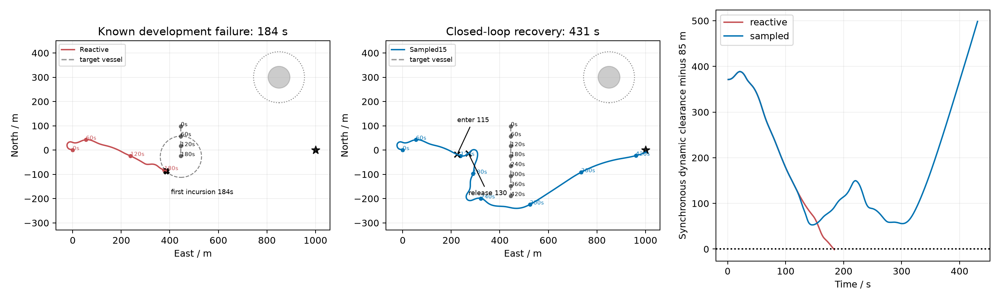
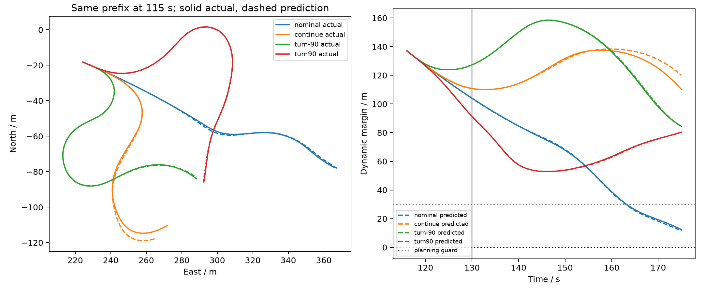
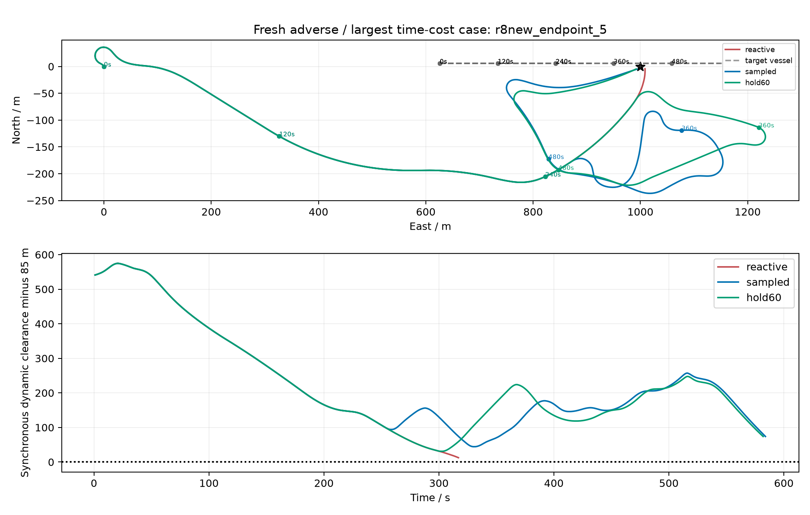
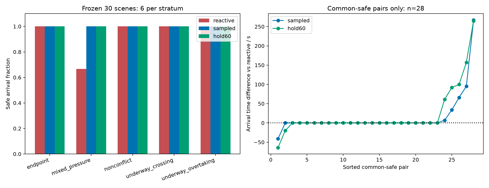
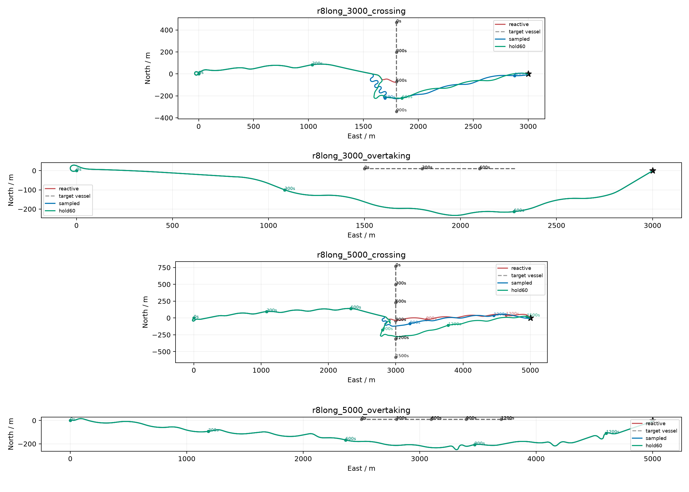
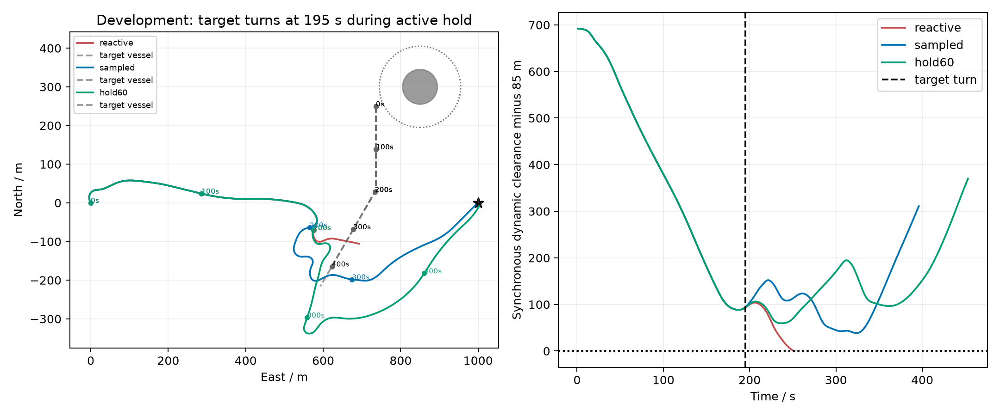

R8 actual trajectory gallery
All curves come from saved physical traces. Development and fresh evaluation identities are retained in figure data. Not a real-time guarantee.
01_underway_recovery

Data / sources | SVG
02_candidate_execution

Data / sources | SVG
03_adverse_case

Data / sources | SVG
04_fresh_results

Data / sources | SVG
05_long_continuous

Data / sources | SVG
06_active_turn

Data / sources | SVG